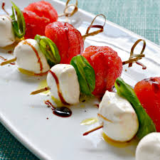

Watermelon Caprese Appetizer

Description
Caprese salad (Italian: insalata caprese [insaˈlaːta kaˈpreːze; -eːse] or simply caprese) is a simple Italian salad, made of sliced fresh mozzarella, tomatoes, and sweet basil, seasoned with salt, and olive oil.
A refreshing appetizer for the summer, my family loved this so much they ate more than a serving each. Also great for those who love the flavor of caprese but aren't huge fans of tomatoes.
Ingredients
- 3 sprigs fresh basil, stems removed
- 1 small watermelon, fruit removed with a melon baller
- 1 (8 ounce) package fresh mozzarella cheese, cut into small pieces
- 2 tablespoons olive oil
- 2 tablespoons balsamic vinegar
- salt and ground black pepper to taste
Steps
- Trim basil leaves into small circles about 1 inch in diameter.
- Thread watermelon and mozzarella cheese on toothpicks, sandwiching a basil leaf in between. Arrange on a serving plate.
- Pour olive oil and balsamic vinegar over toothpicks. Sprinkle salt and black pepper on top.